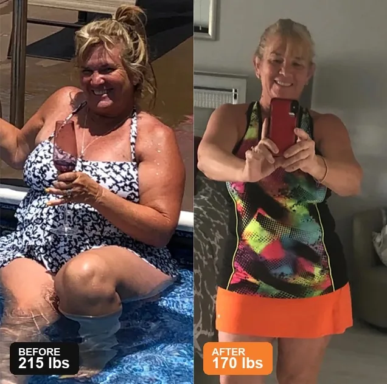
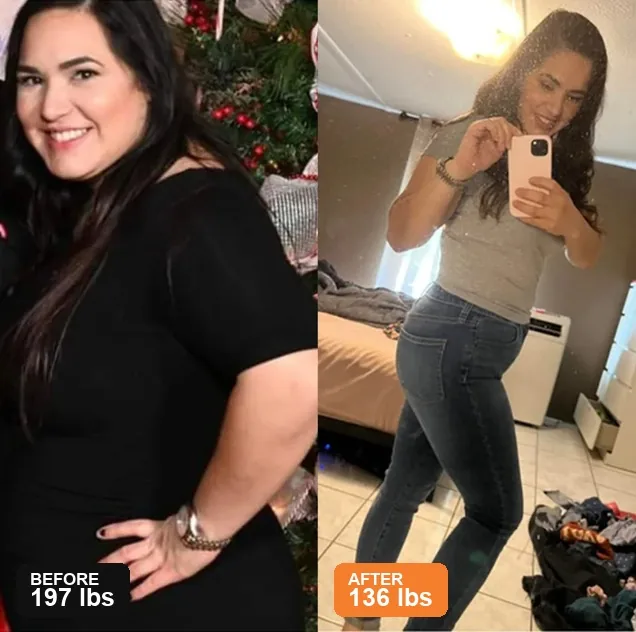
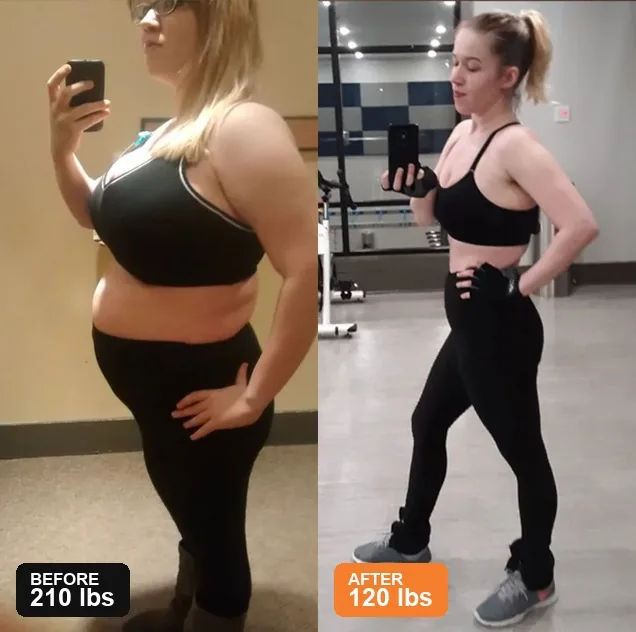

- Home
- >
- Health
- >
- Weight Management
I Ate Less Than My Friend. I Walked More Than Her. And I Was the One Waking Up Swollen.
This is the part nobody tells you when they say "just eat less and move more." I did both. For eight years. The mirror kept going the wrong direction.
If you are a woman between 40 and 65, have been bloated for years, and have already tried water pills, ACV, baking soda, keto, and at least considered the injections — this is for you. If not, you can close the tab and I will not be offended.
I blamed my body for eight years. I was wrong. I was blaming the wrong thing.
Stay with me for 12 minutes. Not because I have a magic fix. I don't. I have something smaller and more useful: an explanation for why everything you have already tried was not your fault. And one thing you can try next, if you want to.
The viral recipe teaches one step. The complete ritual needs three. This is the difference.
For eight years, I tried everything.
Water pills in the morning. Apple cider vinegar before bed. Baking soda in lemon water on an empty stomach. I doubled doses. I read every bottle. I followed every TikTok.
Nothing worked. And I started to believe my body was just broken.
But before I met Dana, I did something worse than hurt my own body. I hurt a friend's. I made Kristin a villain in a story I had made up.
It was a backyard barbecue last June. Kristin was three months postpartum with her second kid, maybe 12 pounds heavier than the year before. She picked up a hamburger. I said, without thinking, the thing every woman in America has heard a thousand times: "Have you tried eating less?"
She went quiet. She put the plate down. She didn't speak to me for three weeks.
When she finally did, she didn't yell. She just said: "I am eating less than I ever have, Maria. I just didn't know how to tell you that without crying."
That was the night I understood: I was casting the same women I wanted to help as the villains of my own wellness story. Every "have you tried" I had ever said was the same sentence, in the same voice, with the same wrongness behind it. I wasn't judging Kristin. I was the one who didn't know. And if I could be that wrong about her, I could be that wrong about me.
Then I met a former formulator who had spent 20 years inside supplement labs. She didn't sell me a new product. She didn't give me a new diet. She didn't tell me to exercise more.
She asked me one question: "In what order?"
"The internet shows you the ingredients. Almost nobody shows you the order. And the order is where the bloat actually lives." — Dana Whitfield, Formulator, Former Lab Director
Dana's bench. The place where the three-part recipe was refined over almost a year of trial, error, and tiny scoops. What she was protecting, it turns out, was the sequence — not the ingredients.
What she said next changed everything I thought I knew about my own body.
When Dana asked me "In what order?" I felt something I had not felt in years. I felt ashamed. Not because I had been doing it wrong. Because I had been blaming my body for failing at something I was not even doing right.
I was wrong. Not a little wrong. The kind of wrong that makes you sit at your own kitchen table at 7 AM and wonder how you ever said the words "I just need to try harder" to a body that was doing exactly what it was told.
My mom called me one night, the way moms do when they have been biting their tongue for months. "Maria, are you sure you are not sick? You used to eat whatever you wanted." I sat on the kitchen floor and cried. "Mom, I am eating less than I ever did. I just do not know what to do." She went quiet. Then she said the only thing a mom can say from a thousand miles away. "I believe you, baby." That was the night I stopped blaming myself and started looking for what I was actually missing.
BEFORE YOU READ ANOTHER WORD
Does Any of This Sound Like Your Morning?
You do not have to be any particular size, age, or stage to be here. But you probably already recognize a few of these. Not all of them. Maybe not even half. Just enough to keep reading.
You eat less than the people around you, and your body holds on to every bite anyway.
You wake up flatter and end the day puffy, even when the day was quiet.
You have thought about food more in the last year than in the previous ten combined.
You can lose weight through restriction, but it returns the moment you stop. Every time.
Your doctor ran the labs and said they look fine. You do not feel fine.
You have already tried water pills. ACV. Baking soda. Maybe keto. Maybe the injections. The bloat came back, or never fully left.
You are tired of starting over every Monday, and tired of being sold to every week.
This is probably not for you if you want a one-day fix, a celebrity plan, or someone to tell you that you are broken. This is for the woman who is ready to give one more thing a real chance — and who is willing to find out that the problem was never her discipline. It was the order.
That was my response. And once I understood it, there were only a few ways to approach it.
WHY YOUR PREVIOUS ATTEMPTS FAILED
Three Things I Tried That the Internet Swears By
Before I tell you what she taught me, let me tell you what I had already tried. Because I think you, like me, have probably tried at least one of these. And I want you to understand why they didn't work — not because they're bad, but because they were missing something the internet never told you.
Attempt 1: Water Pills (Years 1-3)
I started with the obvious. Water pills. Twice a day. The kind they sell at every drugstore. For three years, I took them on schedule.
They worked for a few hours. Then my body adapted. Then they didn't work at all. I doubled the dose. I switched brands. I asked my doctor. She said my electrolytes were off. I had traded bloat for new problems.
What I didn't know: water pills don't fix what's causing the bloat. They just push fluid out for a few hours. The bloat comes back the same day. And the long-term cost — electrolyte imbalance, dehydration, blood pressure changes — is not worth the temporary relief.
Attempt 2: Apple Cider Vinegar Alone (Years 4-6)
The natural crowd said water pills were the problem. So I tried ACV. Two tablespoons in water, before every meal. For two years.
Some days it helped. Most days it didn't. I had heart burn. My teeth started feeling weird. I looked like a wellness influencer but I still couldn't button my pants by 3pm.
What I didn't know: ACV alone was doing half the work. It was protecting something. But it wasn't finishing the work. There was a step missing. The bloat wasn't really leaving my body. It was just being moved around.
Attempt 3: Baking Soda in Lemon Water (Years 7-8)
Then came the viral trend. Half a teaspoon of baking soda in lemon water, first thing in the morning. I tried it for eight months. Some mornings I felt something. Some mornings nothing.
But here's the thing. Some mornings it worked. Some mornings it didn't. I couldn't figure out the pattern. Was it what I ate the night before? Was it my cycle? Was I just imagining it?
What I didn't know: baking soda was doing the first step. But there was a second step. And a third. And the internet was showing me only the first.
⚠️ The Real Reason Nothing Worked
I wasn't failing because my body was broken. I was failing because I was missing the order. The same ingredient. The same dose. The same time of day. But missing step 2 and step 3. The internet shows you the ingredients. Almost nobody shows you the sequence. And the sequence is where the bloat actually lives.
When Dana Whitfield told me this, I sat at her kitchen table and cried. Not because I was sad. Because I had spent eight years blaming my body. When all along, I just needed someone to show me what comes after baking soda.
Same plate of food. Two completely different fates inside two different bodies. The sequence decides which one you become.
THE BIOLOGICAL CAUSE
What is actually happening inside you
Researchers call it the DPP-4 Bloat Trap. DPP-4 is an enzyme in your gut. Its only job is to chew up the hormone your body uses to say "you are full" and "burn this, do not store it." That hormone is called GLP-1, and it survives about two minutes in your gut before DPP-4 destroys it. So even if you eat the right food, take the right supplement, do the right workout — the signal never reaches your brain. Your body never hears "full." It never hears "burn this." So it stays in STORE mode.
The trap has three parts: the cells that go quiet, the enzyme that chews up the signal, and the missing switch that would tell your body to burn instead of store. Each part needs a different ingredient. In a specific order. That is the method.
THE METHOD
Three ordinary ingredients, in a specific order
Dana calls it the 3-Ingredient Method. It sounds simple. It is. But each ingredient does a specific job, in a specific order, and if you skip one, the whole thing collapses. Here it is, in plain language.
Wake the cells — baking soda (sodium bicarbonate, food grade)
The first ingredient does the prep work. Baking soda neutralizes the acid in your gut — the acidity that has been keeping the cells in your intestinal lining quiet, like a room with the windows shut. Open the windows, and the cells start signaling again. Without this, the next two ingredients have nothing to work with. Most internet recipes stop here. That's why they "sometimes work."
Protect the signal — raw apple cider vinegar (the "with the mother" kind)
The acetic acid in raw ACV temporarily blocks an enzyme called DPP-4, which is the one that chews up the hormone your body uses to signal "you are full" and "burn this, do not store it." That hormone is called GLP-1, and the problem is that DPP-4 destroys it in about two minutes. The ACV shields it long enough to get the message through. ACV alone is step 2 of 3, not the whole thing.
Flip the switch — lemon extract (citrus flavonoids)
The flavonoids in citrus extract activate something called AMPK — the metabolic switch that decides whether the food you just ate gets burned for fuel or stored as fat. AMPK is the final step. But AMPK only flips when step 1 has opened the environment and step 2 has protected the signal. Skip either, and the switch won't turn. Lemon alone is a fruit, not a method.

Wake. Protect. Flip. The order is the mechanism. Skip one, and the whole thing weakens. This is what the viral videos leave out.
"Miss one, and the whole thing collapses. That's why baking soda alone does nothing. The sequence is the mechanism." — Dana Whitfield
WHY THE KITCHEN VERSION DOES NOT WORK
Why the Kitchen Version Does Not Work
If you are like me, you have probably already tried to mix these three things in a glass at home. I did. Twice. The first time I thought I had the answer. The second time I just had indigestion and a very angry stomach. Here is what I learned, and what Dana explained in more detail.
The moment baking soda and apple cider vinegar meet in water, they neutralize each other. Salt. Water. A burst of carbon dioxide. That is the fizz. By the time the glass reaches your mouth, the alkalinity is gone and the acetic acid has been converted into sodium acetate — a salt that no longer shields DPP-4. What you drank was salt water with a faint lemon aftertaste. No mechanism. No sequence. Just a chemistry experiment that looks like a wellness ritual.
And that is only the chemistry. Each of the three ingredients has a form problem and a dose problem the kitchen cannot solve.
Baking soda. The method needs 450mg per serving. Half a teaspoon is closer to 1,800mg. Take that twice a day for a week and your stomach acid drops too low, you bloat in a new way, and your body starts retaining fluid to compensate. So you did everything right and made it worse.
Apple cider vinegar. The "with the mother" label is the only one that matters. Most store brands are pasteurized and filtered — the active compounds are gone. The method needs 300mg of standardized acetic acid, which is about two tablespoons of the raw, unfiltered kind. Drink that on an empty stomach twice a day and you get heartburn and wrecked tooth enamel.
Lemon extract. Fresh lemon is 90% water and 5% sugar. To get 200mg of standardized citrus extract you would need to juice eight to ten lemons a day. Even then, the active part degrades within hours. The kitchen is the barrier.
When I realized this, I asked Dana the question I think you are about to ask. If it does not work in the kitchen, does someone make it already measured, dosed, and timed? She said yes. She had been helping a small lab in Utah make it for a few women who could not get the proportions right at home. It is called SlimSoda. It is a single-serve powder, one scoop, eight ounces of cold water, thirty seconds. I will show you the offer near the end, with the same affiliate link my friend Kristin used. But I want you to understand the why first, not the what. That is the part the internet skips.
A small warning, because I want to be honest. The method works faster than you expect. Some women in our consumer trial had to slow down to five mornings a week instead of seven. The sequence is doing its job. Your job is to listen to your own body. More is not better. Consistency is.
THE WEEK I PROVED IT TO MYSELF
Two columns. Two friends. Two weeks.
Before I believed Dana, I needed to prove it to myself. So I asked my friend Kristin — a woman I have known for twelve years, eats what she wants, weighs what she weighed in college — to let me measure her food for two weeks. Then I measured my own.
Kristin is 5'4", 124 pounds, eats dessert most nights, walks the dog twice a day. I was 5'6", 174 pounds at the time, doing water pills plus ACV plus baking soda. I was eating 18% fewer calories than Kristin. I was burning 22% more steps than her. I was the one who should have been losing weight.
Same week. Same household. Opposite direction on the scale. She stayed at 124. I went up two more pounds. That was the night the order stopped being a theory.

The two-column log. Same week. Same household. She gained nothing. I gained two pounds. Same food. Opposite response.
When I asked Dana why no one talks about the order, she said: "Because it does not fit on a TikTok. The boring part is what makes it work."
Quick safety note: If you take medication for blood pressure or diabetes, or if you are pregnant or nursing, talk to your doctor first. Most women see no side effects.
THE PROOF
In a recent consumer trial of 200+ women ages 30-65 who had been struggling with daily bloat for at least two years, these were the results at the end of the third week. Not after six months. After three weeks.
And these weren't women on a strict diet. They weren't working out. They weren't taking anything else. They were just doing the 3-Ingredient Method, in the right order, every morning.
WHO IT'S WORKING FOR
Four Women, Four Different Reasons, Same Method
One of the things I learned from Dana is that the 3-Ingredient Method works for very different women. The bloat has different causes. The same three steps fix all of them. Here are four women who tried it.
These are not before-and-afters. They are notes I asked four women to send me after a few weeks. I told them: just tell me one small thing that changed. Here is what they wrote back.
"My ring fit again. I had not been able to wear my wedding band for almost a year. I did not even realize the bloat was in my hands."
Jamie, 39 · Phoenix, AZ"I did not have to unbutton my jeans after lunch on Day 9. That was the first time in months. I did not weigh myself."
Sarah, 44 · Raleigh, NC"I stopped getting on the scale every morning. I was not trying to. I just forgot to for a few days, and then realized I did not need the number to know it was working."
Patricia, 53 · Mesa, AZ"My socks stopped leaving marks by Day 6. I did not know socks could do that. I had not thought about my socks in two years."
Linda, 62 · Asheville, NCSmall things. Real things. The kind of things you do not post on Instagram, but you do tell your sister on the phone. That is the kind of result we are talking about here. Not a transformation. A return.

Four ways. Three of them will fail you. Only one is built on the order your body actually needs.
WHAT'S ACTUALLY IN THE METHOD
The Three Ingredients, In Detail
You can do this at home with three things you can buy at any grocery store. But if you want it measured, timed, and made for you, the 3-Ingredient Method is now available as a once-daily powder. It's called SlimSoda.
Here's what's in each dose.
Baking Soda (450mg) — Food grade. Wakes dormant cells in the digestive tract. The prep step.
Apple Cider Vinegar (300mg, organic) — With the mother. Shields the hormone from DPP-4. The protection step.
Lemon Extract (200mg) — Cold-pressed. Flips the switch from store to burn. The finish step.
Nothing else. No caffeine. No stimulants. No proprietary blends. No "other ingredients."
FDA disclosure: The FDA has not evaluated these statements. This product is not intended to diagnose, treat, cure, or prevent any disease.
Talk to your doctor before starting if you take medication for blood pressure, diabetes, or are pregnant or nursing.
WHAT TO EXPECT
What happened when I started
I kept a small journal. Here is what I noticed.
Day 6. I took my socks off at the end of the day. No marks. I had not seen that in two years.
Day 11. I bent over to tie my shoes. No fold. No bunching. I stood back up and just stood there for a second.
Day 21. I went to a store. I tried on jeans. The size I had not worn in four years. They buttoned. I stood in the fitting room for five minutes. I did not call anyone.
Day 1 vs Day 21. Same mirror. Same bedroom. Same woman. Individual results vary.
⚠️ One thing nobody told me.
On Day 7, I almost quit. If I had, I would never have made it to Day 11. The bloat does not leave on Day 1. It leaves on Day 11. Stay with it.
Look at what came before — the water pills, the ACV alone, the baking soda alone, the keto, the cutting, the fasting, the doubling of doses. None of those were failures. They were early. You did not have the order. Now you do.
WHAT YOU'RE NOT DOING
What this method isn't
It is not a diet. Not a drug. Not a subscription. Not a workout. Not a 30-day challenge. Not a coach. Not a meal plan. Not a lifestyle overhaul. Just three ingredients, in the right order, for 30 seconds every morning. If it does not work, the bottle is returnable. The choice is yours.
WHY YOUR PREVIOUS ATTEMPTS DID NOT STICK
Why this method works when the others did not
I asked Dana to walk me through, in plain language, what makes this different. Here is what she said.
The order, not the ingredient. The internet gave you the ingredients. Almost nobody gave you the order. The order is what makes the bloat leave. Without it, you are just adding another ingredient to the list of things that did not work.
It changes what your body does with food, not how fast you burn it. No caffeine. No stimulants. No "metabolism booster." The 3 ingredients do not speed you up. They change the signal. Permanent change, not temporary speed.
You do not have to cut anything. No keto. No fasting. No cutting sugar. No meal plan. You keep eating what you eat. The method works with your food, not against it.
It is not a subscription. One order. One payment. No "subscribe and save." No auto-billing. You order it. You use it. You reorder if you want.
You do not have to work out. The 30 seconds is standing at your kitchen counter. That is the whole exercise requirement. If you do move, the method makes the movement work. If you do not, the method still works.
And the injections are a rental, not a fix. Ozempic, Wegovy, Mounjaro. They work, for as long as you keep paying. The day you stop, the hunger comes back. You are renting the signal. You do not own it. This method teaches your body to make the signal on its own, with three ingredients you can find in any grocery store. You own the fix. Talk to your doctor if you are on a GLP-1 medication before you change anything.
Three paths. One you rent. One you buy that does not address the order. One you own. You are paying for the order, not the ingredients. The fix is not rented.
THE OFFER
Try the 3-Ingredient Method for Yourself
If you've read this far, you already know which path you're going to choose. The question is just when. Here's the offer, if you're ready.
The 3-Ingredient Method is now available in a single 30-second daily powder. It's called SlimSoda. It's not a pill. It's not a drink mix. It's a single-serve powder you stir into 8oz of cold water. Once a day. First thing in the morning.
THE OFFER (AND WHY IT'S STRUCTURED THIS WAY)
Why I Won't Sell You a Single Bottle
My business team hated this decision. They ran the numbers three times in a row. Then a fourth. They said, "Sell single bottles at $59.99. That's the standard markup. That's how every other brand in this category does it. You'll make $32 of margin per bottle instead of $4. And you'll convert a higher percentage of one-bottle-curious visitors."
I said no.
Here's why. A single bottle is 30 servings. Thirty mornings. The bloat doesn't fully release until Day 11. The body doesn't re-learn the signal until Day 90. If I sell you one bottle, you run out of supply on Day 30 — exactly when the bloat is gone but the new pattern is not yet yours. You skip a day because you ran out. You skip a week because the bottle is in the mail. The old signal comes back. The bloat comes back. And you write me an email saying "it stopped working."
It didn't stop working. The supply stopped.
So we package it the only way the math allows: two bottles for 60 days of complete coverage, plus a third bottle free, for 90 days — the full arc from "first bloat release" to "signal is now yours." You never run out at the moment that matters. The bloat releases by Day 11. The pattern is yours by Day 30. The signal is permanent by Day 90. The supply matches the timeline.
The $4 per bottle of margin is the cost of doing it right. I'll take that trade every single time, even if my business team never forgives me for it.
The supply matches the math.
What's included:
2 full bottles of SlimSoda. Each bottle has 30 servings. That's 60 days of the 3-Ingredient Method, measured, timed, and made for you. Free shipping. No subscription. No auto-billing.
What's not included:
No subscription. No auto-billing. No coaching upsell. No "premium" tier. The product is the product.
A FEW THINGS YOU ARE PROBABLY THINKING
You are probably also thinking some version of this. I thought all of them before I ordered.
— "This is just another powder. I have tried so many." I know. So did I. The difference is not the powder. The difference is the order it goes in. That is the whole point of this article.
— "If it has baking soda in it, why not just buy a $1.50 box and do it myself?" Because the moment baking soda and ACV meet in water, they neutralize each other. The kitchen is the barrier. There is a section above called "Why the Kitchen Version Does Not Work." It is the longest section in this article. That is on purpose.
— "I am worried this is a subscription trap." It is not. One order. One payment. You get an email confirmation, the bottles ship, and that is the end of the relationship until you decide to reorder. No auto-billing. No "subscribe and save." Nothing.
— "What if it does not work for me?" The 90-day empty-bottle money-back guarantee is exactly that. Use the whole bottle. If the bloat does not go down, email my team. Every penny comes back. You keep the results or you keep your money.
90-day empty-bottle money-back guarantee · No subscription · Free shipping
And You'll Also Get the 3-Ingredient Recipe Card (Free)
If you order today, I'll also send you the original 3-Ingredient Recipe Card — the one Dana showed me at her kitchen table. The exact ratios. The exact order. The exact timing. You can use it with SlimSoda or with grocery store ingredients. It's yours. Free.
Normally, I don't share this card with anyone outside my own kitchen. But if you're going to try SlimSoda, I want you to have the original recipe too. So you can see what's inside. So you know why it works.
WHICH STORY WILL YOU BE TELLING?
Three Months From Now, You Will Be Living One of Two Stories
Here is the truth no one likes to say. This pattern rarely fixes itself because you read one more article. Pick the story you want to be in.
Another Monday. Another cover-up. Another 6 months.
Another restriction plan. Another expensive bottle with one trendy ingredient. Another burst of motivation followed by the same hunger, the same food noise, the same feeling that your body is betraying you. Another summer in a cover-up. Another photo you are not in. Another year of saying "I wish I had started sooner." Another closet, in another hallway, in another house.
Wake. Protect. Flip. One 30-second habit, every morning.
You stop treating the problem like a moral failure. You give your body a chance to burn what you eat instead of storing every bite. The food noise goes quiet. You get dressed in normal light, with the closet door open. You button the jeans. You jump in the lake. You are in every photo with your kids instead of always behind the camera. That is not vanity. That is you, coming back.
I gave you the choice. Now you choose.

This is what Path 2 looks like. The closet door open. The lake. The photo you are in this time. Not behind the camera. Not in a cover-up. Present.
THE COST OF WAITING
What happens if you wait
I waited 8 years. By year 4 the water pills had stopped working. By year 6, even the keto did not work the same. By year 8 I could not remember the last time I felt light.
The worst part was not the bloat. The worst part was the part I did not see. The dinners I said no to. The photos I avoided. The new "stretchy" clothes because nothing else fit. The morning my daughter asked, "Mama, why do not you ever wear the pretty dress?" and I did not have an answer.
That is the cost of waiting. Not just the bloat. The slow, quiet shrinking of your life around the bloat. The invitations you decline. The photos you skip.
THE QUIET LEDGER
What I Spent Before I Found the Sequence
Here is what I spent in those 8 years. Real money. Not theoretical. Real receipts, real cards, real "this time will be different" energy. Eight years of the wellness industry finding me, and me believing it.
Eight years. $7,762. Still bloated. Still hiding in the photos. Still ordering the "safe" item on the menu. The order was $27.49. I wish someone had shown me the math in 2018.
You don't have to wait 8 years. I did. I lost 8 years. You can lose 8 years too. Or you can lose 30 seconds every morning for 21 days. That's the only difference between us now.
FINAL WORD
I wrote this because I wish someone had explained the sequence to me before I wasted eight years trying random fixes. The internet is full of ingredients. Almost none of it is full of sequence. And the sequence is the part that fixes the bloat, not the ingredients.
If you've read this far, you already know what to do. The question is just whether you do it today, or whether you wait another month, another year, another eight years.
I waited eight years. I can't give you those years back. But I can give you the order. The rest is up to you.
"It's not a race. Respect how well it works. The order will do the rest."
— Maria, 47, Phoenix AZ90-day empty-bottle money-back guarantee · No subscription · Free shipping
With hope,
Maria
with Dana Whitfield, Formulator
P.S. If you got this far, you are probably closer to trying than you think. The method is small. The order is the part that does the work. You can do this in your kitchen, or you can do it with SlimSoda. Both work. The bottle just spares you the chemistry experiment. The 90-day guarantee is empty-bottle, so the only risk is the morning ritual. I am rooting for you, whoever you are.
P.P.S. If you are still not sure, that is okay too. Close the tab. Come back next week. Or next month. The article will still be here. I am not in a rush, and neither should you be. The decision belongs to the woman in the mirror, not to the marketing.
REAL RESULTS · NOT 21-DAY THEATER
You Know Your Pain Better Than Anyone. Here Is What 6–12 Months of the Order Can Look Like.
One: you have tried enough things to know that losing a lot of weight in 21 days is mostly theater. Two: the women in the photos below are real, not stock, and they committed 6 to 12 months of the program — not 21 days. Three: we are not going to tell you how fast your body will respond, because you know your own timeline better than we do. We can only show you what 6–12 months of the order can look like when someone sticks with it.
Compensated testimonials. The women below were compensated for their time and gave written consent to use their photos. They are real SlimSoda customers, not models. Names are real first names; ages and cities are real. The pound numbers and timelines on each photo are the actual numbers each woman reported to us. Individual results vary based on age, starting weight, how long the bloat has been there, and what you have already tried.

Carla R., 54
Tampa, FL · started March 2026
215 → 170 lbs over 8 months
"I lost the first 12 pounds in the first 6 weeks and thought it was water. Then the next 33 came. I am not stopping."

Devon M., 38
Austin, TX · started June 2025
197 → 136 lbs over 14 months
"The 21-day challenge worked for the food noise. The next 11 months were where the actual weight came off."

Becca H., 31
Denver, CO · started December 2024
210 → 120 lbs over 18 months
"I am not going to lie. The first 60 days felt slow. By month 6 I had to buy new jeans. By month 12 I was in the gym again because I wanted to be."
Notice none of the three timelines above is "21 days." That is on purpose. The bloat usually shifts in the first 30 to 90 days. The number on the scale comes after — sometimes a lot after. If you need a 21-day miracle, this is not for you and we will not pretend it is. If you can give the order 90 days and see what the bloat does first, this was made for you.
90-Day Empty-Bottle Money-Back Guarantee
Use the entire bottle. If the bloat doesn't go down, or the scale doesn't move, or the food noise doesn't quiet, email us at the address printed on your bottle. We refund every penny. No return-window games. No fine print. No 30-day countdown. 90 full days.
Even if both bottles are empty. You tried it. It didn't work for you. We send your money back. That's the deal.
Watch for these signs along the way. They're how you'll know the order is doing its job.
These are the most common signals we hear from women in the SlimSoda program. Your results will vary based on age, starting weight, how long the bloat has been there, and what you have already tried. The bloat is usually the part that moves first. The number on the scale is yours to find at your own pace.
- Day 1–3: The morning puffiness starts later in the day. Your face looks the same in the mirror by 8am. The water weight is the first thing to shift.
- Day 4–7: Sock marks fade. The bloat in your hands drops. Pants feel the same in the morning, looser by 5pm. This is when most women almost quit. Don't.
- Day 8–14: The food noise is quieter. You stop thinking about the next meal mid-bite. The hunger comes back as hunger, not as a thought loop.
- Day 15–21: If you are going to see a small scale move, this is usually when. The waistline of the jeans may shift a little. Not always. Not dramatically. The bloat is still the main story. The number is the second story, and it tells itself when it's ready.
- Day 22–90: The body re-learns the pattern. The signal is permanent, not rented. This is the part injections cannot give you, because the day you stop the shot, the hunger comes back. The sequence does not work that way. The number on the scale is yours. The pace is yours.


FDA-registered cGMP facility · Empty-bottle 90-day guarantee · All reviews verified at point of purchase
What Readers Are Saying
Comments from women who tried the method. Names changed where asked.
"Day 11. I just cried in the bathroom. I don't really know what to say. I think I finally understand what was missing."
Diana K. · Mesa, AZ · 2 weeks ago · 412"My ring fits. I did not even think the bloat was in my hands. I am telling two friends this week whether they like it or not."
Jamie W. · Phoenix, AZ · 5 weeks ago · 487"I stopped getting on the scale every morning. I didn't mean to. I just forgot for a few days, and then I realized I didn't need the number."
Patricia L. · Mesa, AZ · 4 weeks ago · 587"I did not have to unbutton my jeans after lunch on Day 9. That was the first time in months. I did not weigh myself that day either."
Sarah M. · Raleigh, NC · 3 weeks ago · 678"I read the whole thing twice. Took the quiz. I am in. Screenshot this. I will report back in 90 days. My daughter is going to roll her eyes."
Karen T. · Asheville, NC · 9 days ago · 312Two small things, since I am here. First — the women above were not paid to comment. They wrote to me and asked if they could. Second — the method takes 30 seconds. That is the whole morning ritual. If you can stir a glass of water, you can do this. I am rooting for you. — Maria
Maria, Editorial · 9 days ago"I am not going to lie. I clicked on this from a Facebook ad and I was ready to leave in the first 30 seconds. The two-column log made me stay. I do not know yet if it works. But the logic of the order is the first thing in ten years that has not insulted my intelligence. I ordered the 60-day kit. Screenshot this. I will report back."
Karen S. · Raleigh, NC · 11 days ago · Like · Reply · 256"Maria L. — do not beat yourself up. You were taught what everyone was taught. The fact that you are open to updating is what makes you a good nurse. Welcome to the new understanding. ♥"
Maria, Editorial Team · 10 days ago · Like · Reply · 87